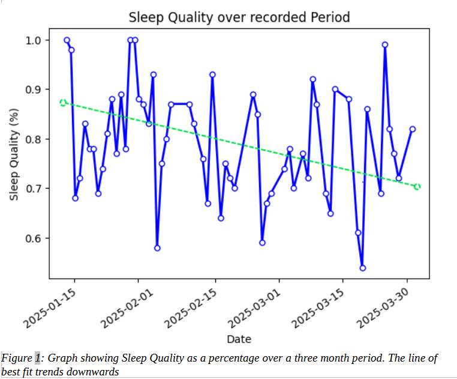

DH2002: Visualising and Narrating the Quantified Self
In an era defined by smart devices and constant connectivity, the boundary between lived experience and measurable data is becoming increasingly thin. The “quantified self” movement invites individuals to turn their attention inward, using technology to track, analyse, and reflect on the patterns that shape their daily lives. Over the past three months, I became both subject and researcher, collecting data on something that has always been very important to me, the quality of my sleep. Through this experiment, I not only gained insights into my behaviours but also encountered the complex relationship between numbers and self-awareness.
To collect my data, I used a “FitBit Inspire HR”. A slim smart watch and health monitor that could be comfortably worn to bed. I’ve had this watch for a few years, and previously used it during work outs and exercise to monitor my heart rate and to count steps. I planned to collect as much data as I could, beginning on Jan 15th 2025, and continuing until around the end of March. Ultimately, I would collect 60 data points, completing collection on March 30th 2025.
This dataset was comprised of metrics collected by the watch, alongside data collected by hand on a notepad I kept on my bed stand. This allowed for the collection of both quantitive and qualitative data, hopefully leading to richer insights. One metric I tracked by hand was what I called “stimulants”. I created four categories; “Drank Coffee”, “Drank Tea”, “Worked out”, and “Stressful Day”. I believed these would be the four stimulants that would occur most often, and would have some effect on my sleep. “Stressful Day” was not created at the same time as the other three, but rather created later, sometime in late February, entries before this point were updated afterwards using journals entries from that period as reference. This occurred because of how close I was watching my sleeping habits. I noticed that on stressful days, it would take me longer to fall asleep, and I wondered if I could possibly draw further insights from it in the future.
In the end, I used a total of eleven data points for my analysis. Shown below is a table with each metric and whether it was tracked by the Fitbit or by myself. Of note is the metric “Activity” which was tracked by the Fitbit. According to the manual, it was intended to track any moments of extreme activity during the night, for example waking up. However when I exported the data to my computer, “Activity” only ever contained the value 0. I am unsure if there was an issue when exporting the data or whether the watch itself is faulty, but either way “Activity” will not be used in any analysis
| Metric | Description | Fitbit/Human |
|---|---|---|
| "Start" | Time when I sat into bed | Fitbit |
| "End" | Time when I got up | Fitbit |
| "Sleep Quality" | Nightly sleep score out of 100 based on duration, REM and deep sleep percentages, and restlessness. | Fitbit |
| "Time in Bed" | Hours spent in Bed | Fitbit |
| "Wake Up" | How did I feel once I woke up? | Human |
| "Drank coffee" | Did I drink coffee today? | Human |
| "Drank Tea" | Did I drink tea today? | Human |
| "Worked out" | Did I exercise today? | Human |
| "Stressful day" | Was today stressful? | Human |
| "Heart rate" | Average Heart rate that night | Fitbit |
| "Activity" | Corrupted Data Point | Fitbit |
| "Diary" | Personal diary entry from that day | Human |
Findings/Analysis:
To begin, let me explain how I defined “Sleep Quality” for this analysis. My FitBit Inspire HR assigned a nightly sleep score out of 100 based on duration, REM and deep sleep percentages, and restlessness. I paired this with a self-reported metric “Wake Up” wherein I gave each night a score of either “Refreshed” or “Tired” each morning. I was tempted to use a point system, and indeed started out by doing so, for “Wake up” but I found this to be too subjective, and so ultimately grouped everything into either “Refreshed” (1) or “Tired” (-1) (Figure 4). By tracking both the objective statistics from the watch, and my own subjective experience, I believe I was able to discover more interesting insights than relying exclusively on either one alone. The two measures often aligned but discrepancies between them became a source of unexpected insight.
Overall, I found there to be a somewhat steady decline of my sleep quality as the year progressed. Below, is a graph depicting each nights sleep quality over the three month period (Figure 1). Interestingly, we can see a large amount of spikes and dips. This sparks many questions; possibly it was due to noisy room-mates or neighbours causing me to exit a period of deep sleep or REM; or could the inconsistent times at which I went to bed be the culprit; or possibly it could be due to certain stimulants in my life.
Of the 60 days that were tracked, only 8 (7.9%) were without some kind of stimulant. Shown below (Figure 2), we can see that a high majority (36.7%) of days featured a decent caffeine intake (at least one tea and coffee). Interestingly, the next largest set includes caffeine as well as some sort of exercise. This tells us a lot about my habits over this period, and we can begin to piece together a story of why my sleep quality was seemingly so inconsistent. I had long suspected caffeine played a role in my sleep quality, but the data solidified the relationship: on days I drank either a tea, a coffee or both my average sleep quality was between 70% - 80%. Compared to days with no caffeine at all, which averaged at over 90% (Figure 3).


We can begin to piece together a narrative of how an increased caffeine intake lead to an inconsistent and fluctuating quality of sleep. Despite this, my subjective data “Wake up” did not reflect this same sleeplessness. Looking at only this data, we see a much different story. One where I spent three months sleeping soundly most nights, and that only improved as the year progressed (Figure 4).
This discrepancy suggests that even if my body failed to achieve enough deep sleep by the device’s standards, my mind experienced a kind of rest that it deemed adequate. Here emerges a narrative of a person who has become so adjusted to restless sleep, that the mind itself has changed to believe it is satisfied, despite the body saying otherwise. The power of the mind is incredible and this also reinforced for me that quantitative tracking benefits from qualitative context, and that the quantified self is not merely about hard numbers but also personal interpretation.

Of all the variables I tracked, stress was the most difficult to quantify but perhaps the most impactful. I defined a “stressful day” as one where, whether due to work, interpersonal conflict, or other pressures, I sat into bed that evening feel drained beyond normality. For obvious reasons, this metric is very subjective and so is open to much interpretation. However even still, on days with high stress, my sleep quality greatly decreased. Ironically, on stressful days I would consume more caffeine, which would compound to worsen my sleep further. I think this is what we can accurately attribute to the large dips seen in figure 1.
And finally, there was a variable I had assumed would prove much more influential, “Working out”. I not only underestimated the impact exercise would have, but it seems I completely misunderstood it. In the beginning, I added it as a metric because I believed it would correlate with an increase in sleep quality. Whilst true, Figure 3 shows that stimulant combinations containing exercise never grew higher than 75% sleep quality, implying that exercise decrease sleep quality by some amount.
In Summary:
These insights, while specific to my experience, highlight a broader truth: quantifying the self enables patterns to emerge that would otherwise go unnoticed. Before this project, I believed I had a rough sense of what affected my sleep (Coffee, Tea, Exercise and Stress) but I was wrong. I overestimated the impact of working out, underestimated the impact of caffeine, and misunderstood the subtle but significant role of stress. Only through systematic tracking was I able to see the interplay between habits and outcomes.
What this experiment ultimately taught me is that self-quantification is not about reducing the self to numbers but about deepening the conversation between data and experience. The quantified self is not a final answer to questions of health or happiness—it is a tool, a lens, a framework for curiosity. Numbers can illuminate, but they require context, interpretation, and a willingness to experiment. The act of collecting data is, in itself, an invitation to reflect, to learn, and to grow.
Three months of data didn’t just help me sleep better. They helped me become more mindful, more in tune with my body, and more compassionate toward myself on the nights when, despite doing everything “right,” sleep still eluded me. Because ultimately, being human isn’t a science—it’s a balance of science and self-understanding.